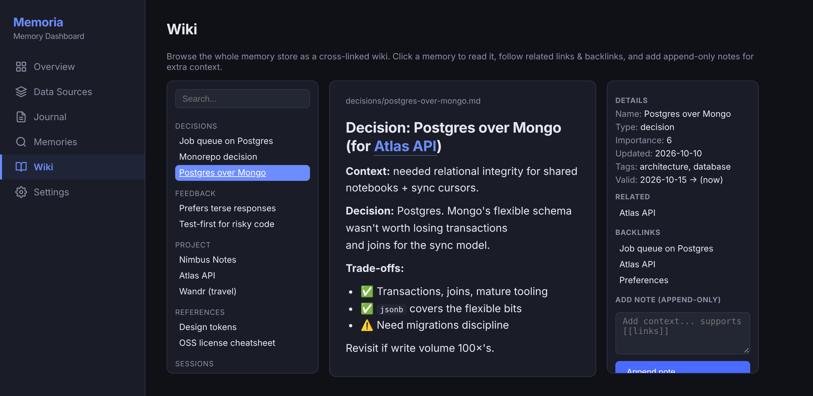

Open-source MCP server
Long-term memory for Claude, as a Markdown repo you own.
Memoria gives Claude Code and claude.ai one shared memory. Every memory is a plain file in a folder you control: searchable, synced between your machines with git, and readable without the tool.
30 seconds, with narration. A scripted illustration: the prompts and Claude's replies are written, and everything Memoria outputs in it is real, from the demo data.
Every session starts from zero. This one doesn't.
Claude calls Memoria's tools over MCP: it searches the store when a task begins and writes down what is worth keeping as you work.
Claude searches what you decided
A question about last month's architecture choice is answered from your own notes, with the file it came from.
Decisions are written as you go
Durable facts become their own notes. Day-to-day events go to an append-only daily log. A check before each write returns the three most similar memories, so Claude updates a note where it would otherwise duplicate one.
The memory is a file
Open it, fix it, delete it, grep the folder. The SQLite search index beside it is derived: remove it and it rebuilds from the files.
> We're moving the job queue to Postgres, with SKIP LOCKED. Remember that. ● memoria · memory_write("decisions/job-queue-postgres.md") └ Written: decisions/job-queue-postgres.md (1 chunks indexed) ● Saved as a decision, linked to the Postgres-over-Mongo note.
--- name: Job queue on Postgres type: decision importance: 6 tags: [architecture, database, queue] related: [decisions/postgres-over-mongo.md] --- ## Decision: job queue on Postgres Move the Atlas API job queue to Postgres, using `SELECT ... FOR UPDATE SKIP LOCKED`.
Sync is git. There is no service.
Put the store in a private git repository. The plugin adds two Claude Code hooks: commit and push when Claude stops, pull when the next session starts. Both fail soft when you are offline.
# the Stop hook ran memoria-sync-push.sh $ tail -2 .sync.log push: committed session changes push: pushed to origin/main
# the SessionStart hook ran memoria-sync-pull.sh $ grep pull: .sync.log pull: committed unflushed local changes before pulling pull: merged 1 commit(s) from origin/main > What do we use for the job queue? ● memoria · memory_search(…) └ 1. decisions/job-queue-postgres.md 0.528 2. daily/2026-11-19.md 0.475
Two machines, same day, no conflict
Daily logs are append-only, so when two machines both write to today's file the answer is mechanical: keep both sides. Git ships a merge driver that does exactly that, and one line in the store's .gitattributes turns it on.
## 02:13 UTC — note Fixed the sync cursor off-by-one in Atlas API. Regression test added first. ## 02:15 UTC — note Moved the Atlas API job queue to Postgres (SKIP LOCKED). See decisions/job-queue-postgres.md.
memories/daily/*.md merge=union
Curated notes keep git's normal three-way merge on purpose: if both machines edited the same decision, that is a real disagreement and you should see it. Log lines above are shortened by their timestamps.
One memory. Every Claude.
The same store serves Claude Code over stdio and claude.ai over HTTP. A decision recorded in a terminal can be found from a chat on your phone.
- Claude Code: installs as a plugin, or with
claude mcp add. - claude.ai: a custom connector. The HTTP transport implements OAuth 2.1 with PKCE, dynamic client registration and metadata discovery.
- Other MCP clients: any client should work. Cursor has a tested configuration.
The claude.ai side means running the HTTP server somewhere reachable, with your own TLS in front. A Docker Compose file and a Cloud Run template are in the repository.
Search with the numbers attached.
Retrieval combines embeddings with BM25 keyword search. Embeddings catch a reworded question; keywords catch the things embeddings blur, like a ticket number or an error string.
- Local by default. Embeddings are computed on your machine with all-MiniLM-L6-v2, a one-time download of about 23 MB. Remote embeddings need an explicit setting; an API key in your environment is not consent.
- Coverage is never silent. Every result reports how many chunks were scanned.
- The eval is in the repository, with the sweeps, the controls, and a list of what it does not show.
nDCG@10 on the retrieval eval
175 synthetic documents, 144 queries, local MiniLM. Synthetic is the important word: this shows the weights are not broken, not how it does on your notes. Read the eval write-up.
A dashboard on the same files.
Browse the store as a wiki with related links and backlinks, search it with the same ranking Claude uses, and add notes of your own in the journal.



All four views show generated demo data. Open the live demo (key: memoria-demo) to click through it yourself.
The whole story in 84 seconds.
One decision, followed from a laptop to a desktop and into the dashboard.
With narration; the same captions are on screen. A scripted illustration with real Memoria output, as above.
What it is not.
A tool that holds your memory should say where it is thin. The README keeps a full Known Limitations section; these are the ones to know first.
- Not multi-user. It is single-tenant, for your own assistant. If you are building memory into a product, use something built for that.
- Not a replacement for CLAUDE.md. Standing instructions belong there. Memoria is for the long tail that is searched when relevant and never loaded otherwise.
- One key, one writer. The hosted setup has a single static key as its perimeter and runs one instance per store.
- The collector is experimental. Optional ingestion of email, calendar and messages ships switched off. Consent can only be given in the dashboard. Read SECURITY.md first.
- Solo project. Used daily by its maintainer since spring 2026; reviews are asynchronous.
Install
The store defaults to ~/.memoria and is created on the first write. Node 20 or newer.
Claude Code plugin
Registers the server and wires the sync hooks. The first start builds from source and takes about a minute.
/plugin marketplace add Agripp87/memoria_mcp /plugin install memoria@memoria
From npm
The server alone, without the hooks. Other MCP clients use the same command.
$ claude mcp add memoria -s user -- \
npx -y @agrippa87/memoria-mcp
Then tell Claude how to use it
Add a standing instruction to your CLAUDE.md, for example:
At session start, memory_search for context relevant to the task. Record decisions, solved bugs and preferences with memory_daily during the session, memory_write for durable facts. Do not capture transactional work.
For claude.ai, Docker, multi-device sync and every setting, see the Quick Start in the README.